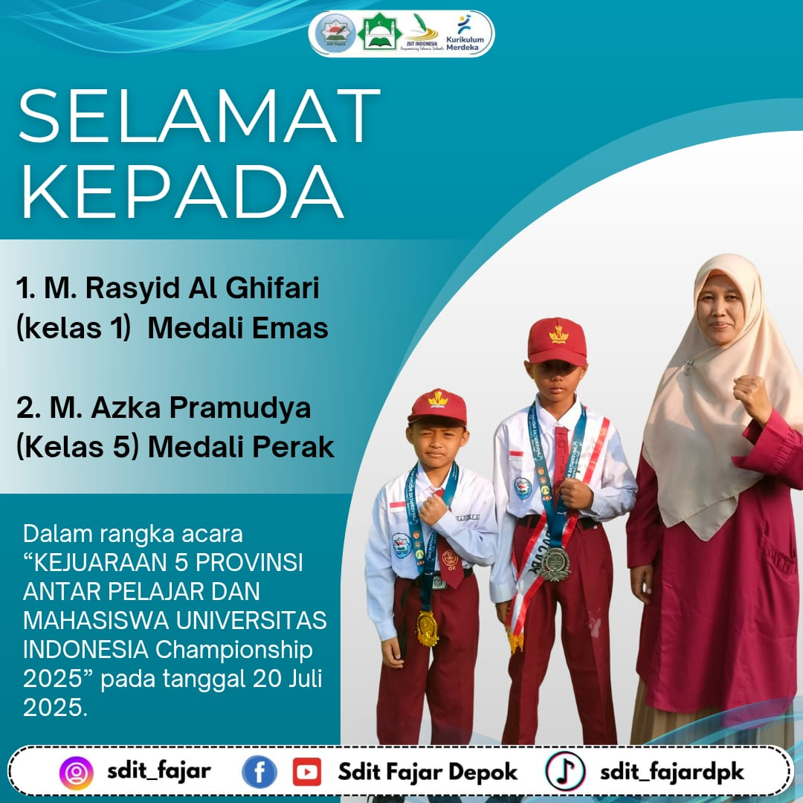
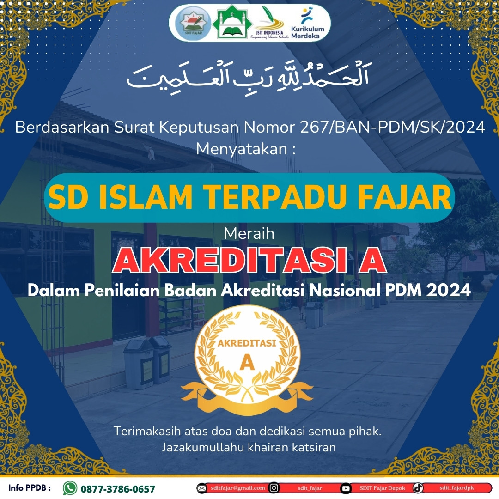
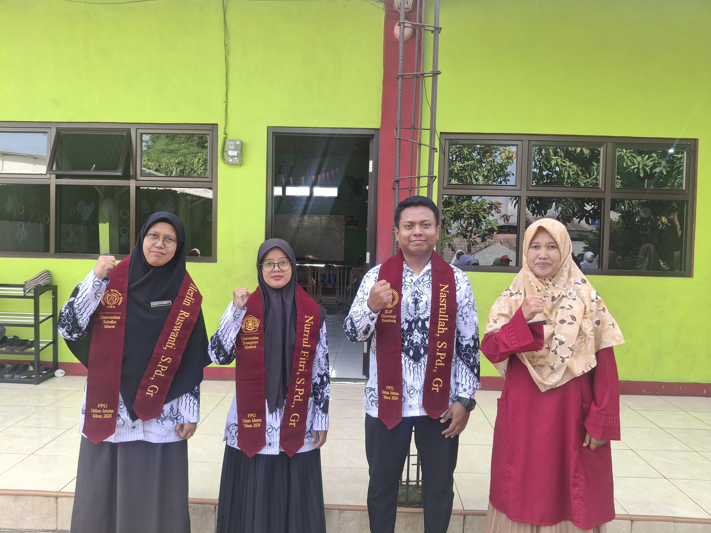
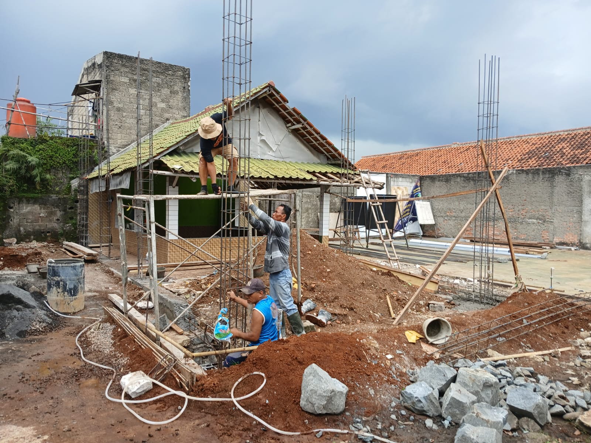
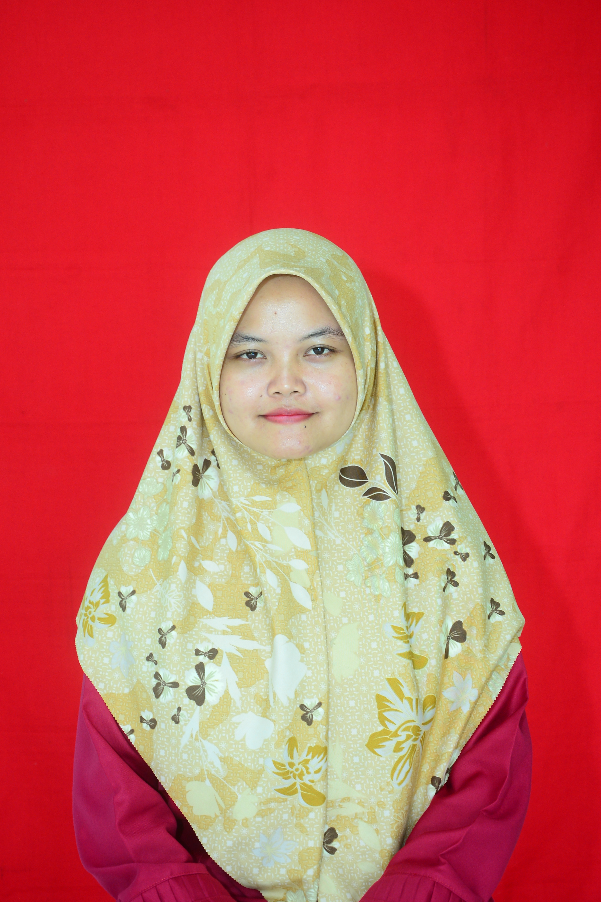
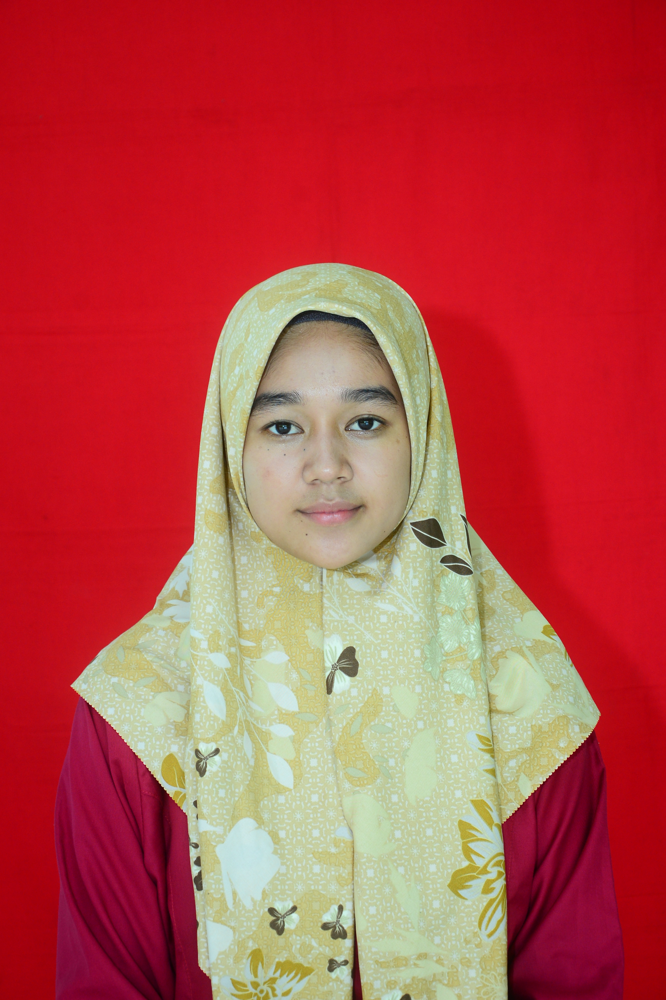

Kreatif, Cerdas, Berprestasi, dan Berakhlak Mulia
Hubungi Kami!SDIT (Sekolah Dasar Islam Terpadu) Fajar Depok adalah sebuah sekolah dasar yang menggabungkan kurikulum pendidikan nasional dengan pendidikan agama Islam. Sekolah ini menawarkan program pendidikan yang berfokus pada pengembangan akademik serta nilai-nilai keislaman. SDIT Fajar bertujuan untuk membentuk generasi yang tidak hanya cerdas secara intelektual tetapi juga berakhlak mulia dan berpegang teguh pada ajaran Islam. Sekolah ini memiliki berbagai kegiatan tambahan yang mendukung pembentukan karakter islami siswa, seperti hafalan Al-Qur'an, shalat berjamaah, dan kegiatan keagamaan lainnya.
SDIT Fajar memiliki kehadiran aktif di berbagai platform media sosial untuk menjaga komunikasi yang efektif dengan siswa, orang tua, dan komunitas. Melalui media sosial, kami berbagi informasi terkini tentang kegiatan sekolah, prestasi siswa, dan berbagai pengumuman penting lainnya. Ikuti kami di platform berikut untuk tetap terhubung dan mendapatkan update terbaru tentang aktivitas di SDIT Fajar:
Kumpulan Berita Terbaru Sekolah untuk Menginspirasi dan Mengedukasi Kita Semua.

Tahun ajaran baru telah dimulai! Inilah wajah-wajah ceria peserta didik baru SDIT Fajar yang siap menimba ilmu dan membentuk akhlak mulia. Dengan semangat dan keceriaan, mereka memulai perjalanan pendidikan dalam suasana yang islami, penuh cinta, dan inspiratif. Selamat datang, generasi hebat masa depan!

Selamat dan sukses kepada ananda:
M. Rasyid Al Ghifari (Kelas 1) — Peraih Medali Emas & M. Azka Pramudya (Kelas 5) — Peraih Medali Perak
Atas prestasi luar biasa dalam ajang "Kejuaraan 5 Provinsi Antar Pelajar dan Mahasiswa Universitas Indonesia Championship 2025" yang diselenggarakan pada tanggal 20 Juli 2025. Semoga menjadi inspirasi bagi teman-teman
lainnya untuk terus berprestasi dan membanggakan sekolah, keluarga, serta agama

SD Islam Terpadu Fajar meraih Akreditasi A dari BAN PDM 2024. Prestasi ini merupakan hasil dedikasi semua pihak. Terima kasih atas do'a dan dukungannya!

Kami ucapkan selamat untuk Guru-guru kita, Sertifikasi guru adalah proses pemberian sertifikat pendidik kepada mereka yang telah memenuhi standar profesional guru. Sertifikat pendidik sendiri merupakan bukti formal pengakuan kepada guru sebagai tenaga pengajar profesional.

Dimulainya pembangunan gedung baru di sekolah kami. Proyek ini bertujuan untuk meningkatkan fasilitas dan menciptakan lingkungan belajar yang lebih baik bagi siswa dan staf. Gedung baru ini akan dilengkapi dengan ruang kelas modern, laboratorium, dan area kegiatan lainnya yang dirancang untuk mendukung proses belajar mengajar yang optimal. Terima kasih atas dukungan dan doa dari semua pihak yang terlibat dalam mewujudkan proyek ini. Kami berharap gedung ini akan menjadi tempat yang inspiratif bagi perkembangan akademik dan pribadi siswa.
Motto
"Jiwa Pemimpin tumbuh dari lingkungan dan perkembangan interaksi sosial"
Visi
"Terwujudnya peserta didik yang beriman dan bertaqwa, terampil serta cinta terhadap lingkungan"
Misi
- - Menanam keimanan dan ketaqwaan kepada peserta didik dalam taat beribadah
- - Membentuk peserta didik yang cerdas, kreatif, inovatif dan berakhlak mulia
- - Mengoptimalkan proses pembelajaran dengan bimbingan dalam mengembangkan bakat yang dimiliki peserta didik
- - Meningkatkan prestasi akademik dan non akademik
- - Mewujudkan suasana kekeluargaan antar warga sekolah
- - Mewujudkan budaya peduli lingkungan hidup
Daftar Tenaga Pendidik dan Administrasi Sekolah

Nining Juningsih, S.Ag.

Herlin Ruswanti, S.Pd. Gr
Risma Asyifa, S.Pd.

Mia Nurdiana, S.Pd.

Esa Pandu Imansyah, S.Pd.

Nurul Fitri, S.Pd. Gr

Nasrullah, S.Pd. Gr
Ust Padil Riswandi

Ustadzah Diana

Ustadzah Rifka
Ustadzah Rizky
Daftar Tenaga Pendidik dan Administrasi Sekolah
Cerita Nyata dari Orang Tua dan Siswa tentang Pengalaman Bersama SDIT Fajar
/
Kirim Pesan, Kesan, dan Saran Anda untuk Sekolah kami agar lebih baik untuk bangsa dan negara.